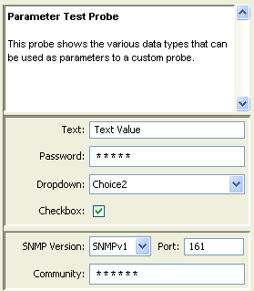

The parameter
<parameters>
[parameter name]= "[parameter value]"
</parameters>
Each parameter name/value appears in its own entry field in the Set Probe window.
Four types of input fields are available:
This field type presents a simple text box for entering a string.
"Text" = "Text Value"
The line above sets the variable ${Text}
You can create input parameters that conceal the string from casual view (so-called password parameters.) The data is displayed as a line of asterisks ("*****") when a user types the password. To specify a password parameter, place a single asterisk ("*") after the name of the field, like this:
"Password*" = ""
Note that the variable name remains ${Password*} and you have to refer to it as such in your script. The "*" is removed before displaying the name, so the above password parameter would appear as "Password" in the Set Probe window.
You can create input parameter fields that present a dropdown menu from which the user can choose from a number of choices.
To create a dropdown field, use this syntax:
"Test[Equal,NotEqual]" = "NotEqual" //Default value is NotEqual
The values between brackets define the choices available to the user. The value on right of the statement is the initial value of the dropdown field.
You can use this parameter in expressions. The full variable is ${Test[Equal,NotEqual]}, and it returns the current value of the dropdown as selected by the user. To display the value of a dropdown in the Status window, you must use the full variable definition.
\4\Dropdown:\0\ ${Test[Equal,NotEqual]}\0\<snmp-device-variables>
alarm: (${Dropdown[Choice1,Choice2,Choice3]} !=
"Choice2") "It's not Choice2!"
</snmp-device-variables>
To create a check box, use this syntax:
"Checkbox[true,false]" = "true" //Default value is "true"
You can use this parameter in expressions. The full variable is ${Checkbox[Equal,NotEqual]}, and it returns the current value of the check box as selected by the user
<parameters> "Text" = "Text Value" "Password*" = "" "Dropdown[Choice1,Choice2,Choice3]" = "Choice2" "Checkbox[true,false]" = "true" </parameters>
|

Probe Parameters |